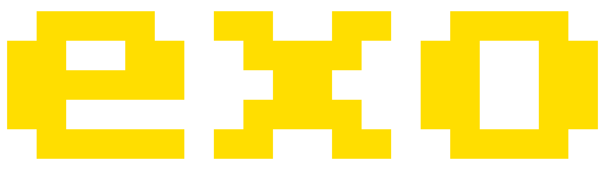
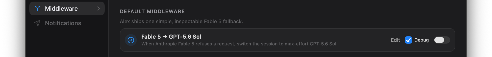
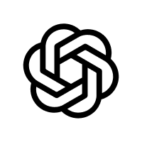
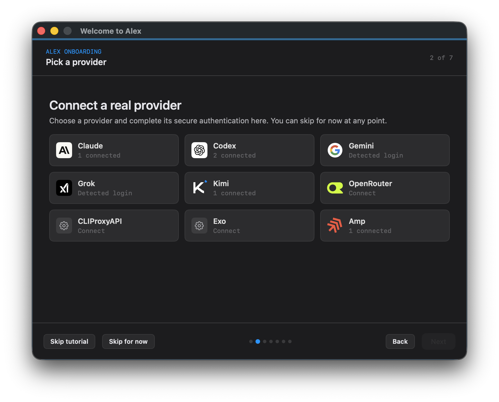

Problem Fable 5 guardrails kill your session.
Solution Alex can transparently switch to GPT-5.6 Sol, or fork the session into another harness or model.

Keep the same session moving when a model hits a guardrail.
Alex lets you configure multiple token providers.
 CodexGeminiGrokKimiOpenRouter
CodexGeminiGrokKimiOpenRouter
ExoAmpAlex can run custom middleware to reroute your session to meet your needs.

The future is multi-provider, multi-modal: MoA — Mixture of Agents.
GPT-5.6+K3Problem Fable 5 guardrails kill your session.
Solution Alex can transparently switch to GPT-5.6 Sol, or fork the session into another harness or model.
Problem Your subscription logs out mid-run.
Solution Alex pings you on Telegram to re-auth from your phone and can reroute traffic until it reconnects.


Problem You cannot use your Anthropic subscription from other harnesses.
Solution Alex routes through Dario so requests match Anthropic’s expected wire format.
Problem You hit five-hour or weekly limits and start juggling accounts.
Solution Alex bonds multiple subscriptions and fails over automatically.
Problem You cannot see what agents and subagents are really doing.
Solution Alex shows every message, tool call, response, and subagent as one readable chat thread.
curl -fsSL https://raw.githubusercontent.com/madhavajay/alex/main/install-release.sh | sh
alex auth importalex connect pi
# pi | claude | codex | grok | amp | cursoralex wrap claude
# or another connected harness/model alex/*